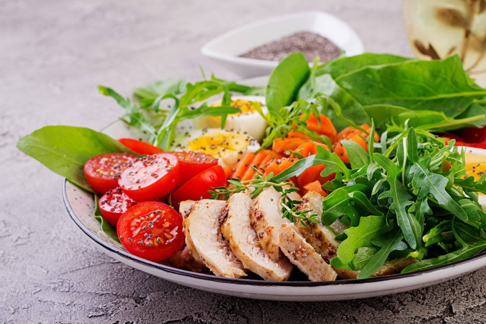
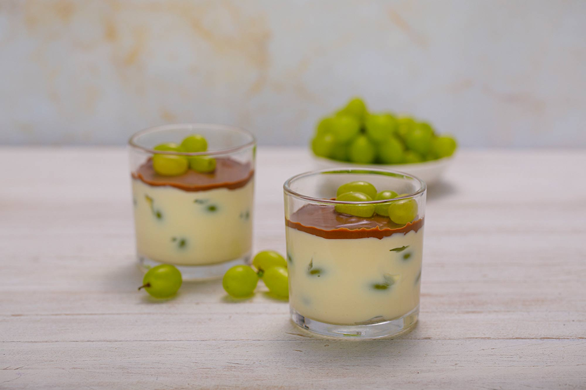
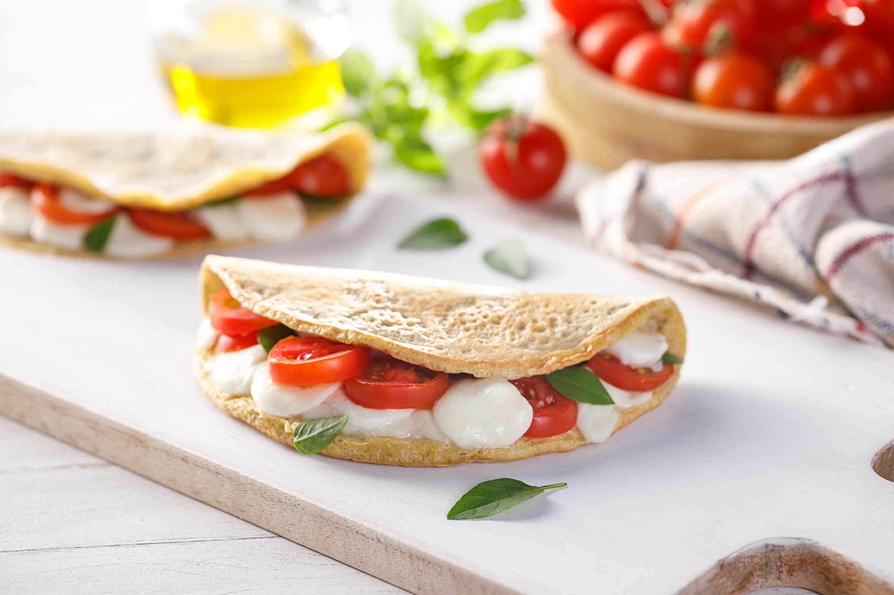
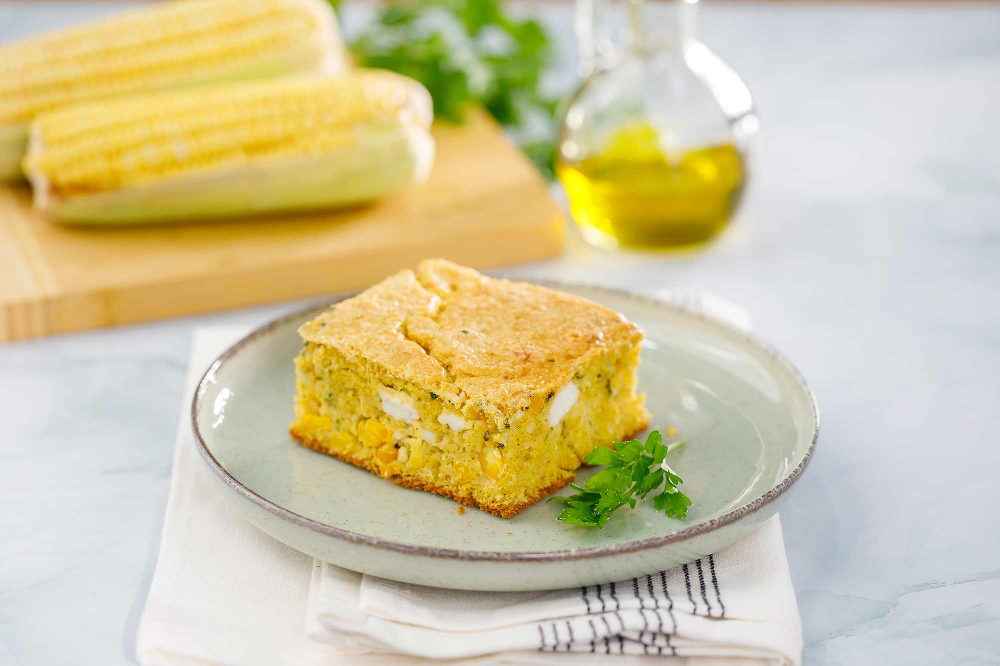
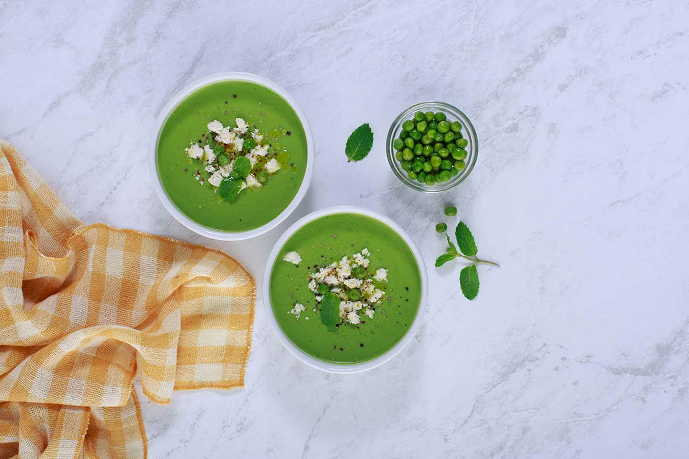
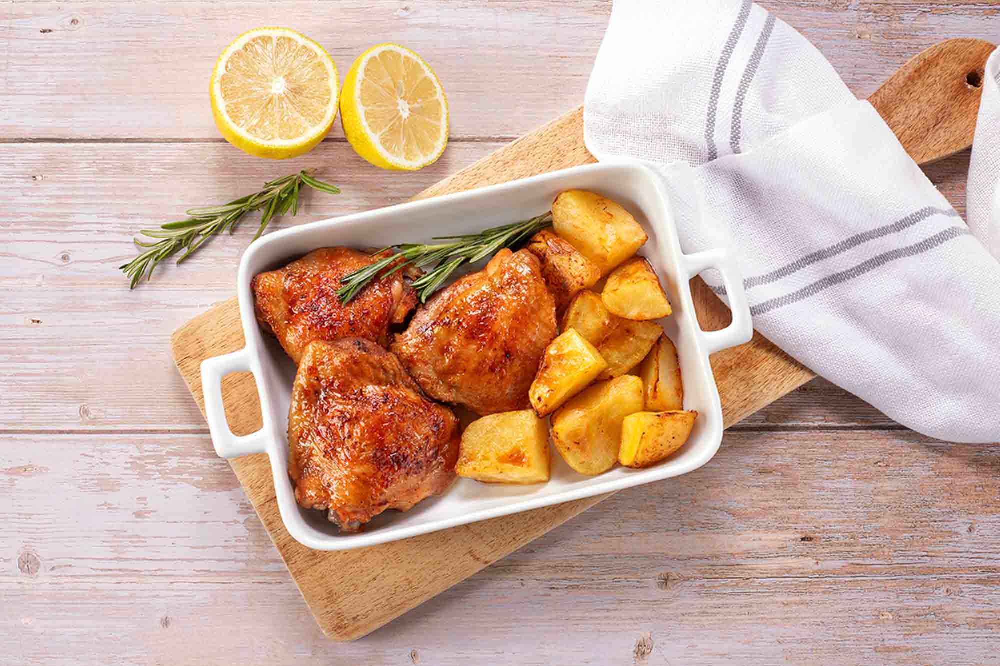
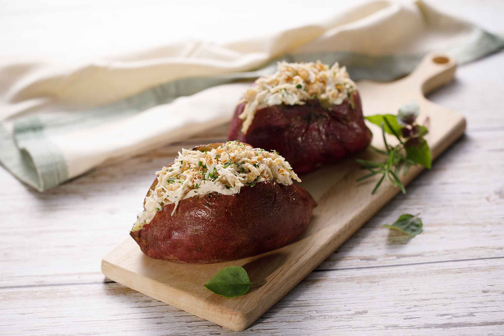

Temas Populares

Nutrição
Tudo o que você precisa para fazer uma alimentação saudável,seja para emagrecer ou ganhar peso. Dicas de dieta e suplementação para uma vida saudável em qualquer fase da vida.
Quero detalhes.jpeg)
Emagrecer
Confira as dicas mais valiosas para perder peso e emagrecer de vez! Conteúdos sobre dietas, chás e remédios para que você tenha uma jornada de emagrecimento saudável e equilibrada.
Quero detalhesFitness
Tudo o que você precisa para alcançar seus objetivos e ter um corpo mais saudável! Aprenda sobre os diferentes tipos de exercícios, planos de treino práticos, técnicas de treinamento e dicas de pré e pós-treino.
Quero detalhesReceitas Exclusivas

Bombom de uva

Aveioca caprese

Torta de milho de
Torta de milho de
liquidificador

Sopa fria de ervilha
Sopa fria de ervilha
com hortelã

Sobrecoxas assadas
Sobrecoxas assadas
com batatas

Batata-doce recheada